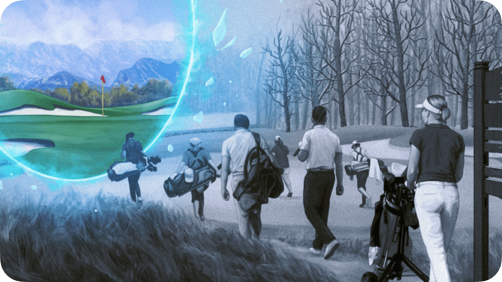
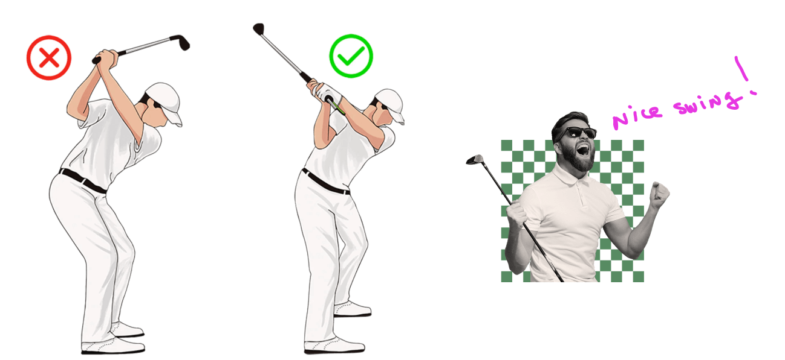
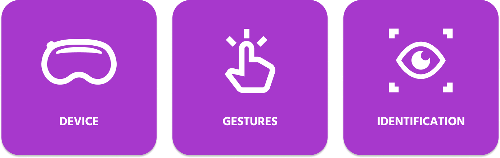

Bringing fun to spatial computing
March 2024
Role
UX/UI, Research
Platform
VisionOS
In this case study, I’d like to share our experience working on a small but intense XR experiment - a mini-golf game built for Apple Vision Pro. I’ll walk you through the project’s context, the UX challenges we faced, and the lessons we learned from building an MVP in just two weeks.
My role & contribution
As the UX/UI designer, I was responsible for shaping the entire product experience - from defining the core concept and interaction model to designing the interface and assets for Vision Pro.
I collaborated closely with the developer to adapt 2D designs into a 3D spatial environment, ensured gesture-based controls were intuitive, and helped tailor the app for quick, event-based engagement.
The Ask
This entire project began with an unexpected pitch from leadership:
What if we created a fun, interactive Vision Pro experience for a tech showcase at the Emerald Valley Golf Classic in Oregon?
The event, scheduled for April 15 in Eugene, was a high-end networking event targeting potential enterprise clients. Our goal? To use Vision Pro not just as a conversation starter, but as a living demo of our team's creativity, tech capabilities, and design thinking.
The concept:
A light, beginner-friendly VR experience where users could try a golf swing in mixed reality, guided by simple visual instructions.
Project Scope & Timeline
There was one major challenge. We had only 14 days to design and ship a working MVP.
In that short time, we had to:
- Learn the fundamentals of golf mechanics (like proper stance and swing form)
- Understand spatial design on Vision Pro
- Define interaction patterns that worked without physical controllers
- Deliver something both delightful and demo-ready
We knew this wouldn’t be a polished game, but it had to be functional, intuitive, and visually compelling.
UX Challenges
1. No Direct Access to Vision Pro
Only one developer on our team had access to the device, which made design validation extremely tricky.
We couldn't test interactions ourselves, meaning every layout or gesture decision was based on assumptions, documentation, and secondhand feedback.
2. Designing for Gestures
One of our concepts assumed that players’ hands would be occupied, as they physically mimic real golf swings. Because of this, traditional hand gestures for navigation weren’t practical. We explored alternative ways to progress through tutorial steps or reset the game without requiring touch input.
Key questions we considered:
- How can players advance to the next instruction hands-free?
- What happens if someone exits the app mid-swing?
- Should UI elements be mirrored for left- and right-handed users?
3. Identity & Onboarding
Vision Pro uses optical authentication to unlock the device based on eye and face scanning inside the headset. There’s no multi-user or guest mode, only the registered user can unlock it. Shared use requires re-authentication, limiting convenience in group settings.
Research & Brainstorming
Without access to the hardware, we relied heavily on:
- Apple’s official visionOS Human Interface Guidelines
- Developer blogs and early adopters’ reviews
- YouTube demos and tear-downs from creators
- Analysis of early Vision Pro apps and games
We documented key interaction patterns, gesture libraries,
and performance bottlenecks other creators had run into, which
helped us avoid some of the same mistakes.
Concepting
With only two weeks, we had to be smart about scope. After initial brainstorming, we narrowed down two core directions:
Concept 1: Guided Golf Training
A semi-realistic simulation where the user holds a virtual club and follows on-screen prompts to practice posture, aim, and swing timing. The system would provide basic visual feedback and track "shots" over a few rounds.
This concept leaned more toward education but introduced complexity in both physics and gesture design — things we didn’t have time to fully prototype.
Concept 2: Smash Golf - A Fun Reflex Challenge
A casual arcade-style game where the user deflects golf balls coming toward them using only their hands. The more balls they deflect, the higher their score. Surrounding 3D objects (like vases, TVs, or picture frames) could also be “smashed” to earn bonus points.
Inspired by games like Fruit Ninja VR and Beat Saber, this concept prioritized fun, speed, and accessibility. Perfect for short demos at a live event.
After a quick team review, we chose Concept 2.
Crafting the Look & Feel
Even for a lightweight MVP, we wanted the UI to feel polished and branded. Key UI elements included:
- A circular countdown timer displayed in the player’s peripheral vision.
- A “Game Over” panel with animated particle effects and confetti bursts.
- Clear iconography and hand-gesture illustrations for basic instructions.
Key Takeaways
While it was a small project, the takeaways were huge:
Simplicity
Simple concepts work best in VR, especially when users are trying something for the first time.
Unpredictable
Vision Pro has massive potential, but still lacks maturity in tooling and documentation. Planning extra time for testing is critical.
Evolving
Vision Pro has massive potential, but still lacks maturity in tooling and documentation. Planning extra time for testing is critical.
Spatial
You have to think in 3D. Even if you prototype in 2D, always imagine how UI will behave in space, respond to lighting.
Apple’s documentation is gold. Their guidelines saved us
time, especially around gesture behavior, depth layering, and
contrast ratios.
Final Thoughts
This project was a fast, fun, and eye-opening dive into spatial design. While not everything went smoothly, it gave our team hands-on experience with emerging XR platforms and helped us lay the foundation for future, more ambitious immersive projects.
We're excited to continue exploring what’s possible with spatial computing and Vision Pro and we now know where to start, what to avoid, and how to keep things light, fun, and intuitive.